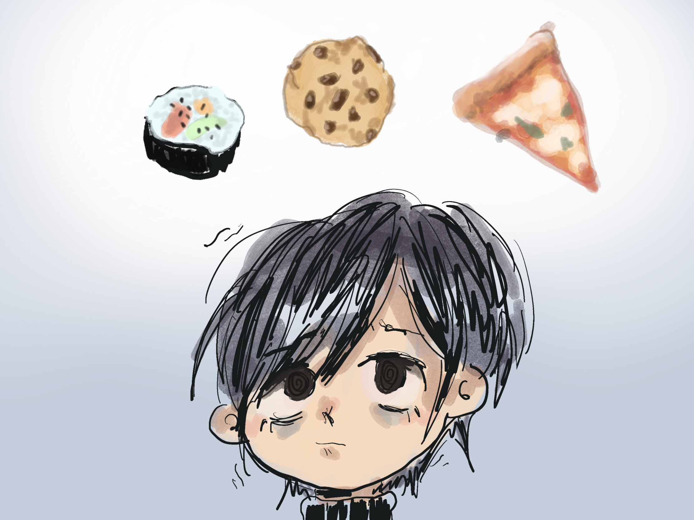

Bulimia is characterized by an unusually large quantity of food being consumed in a short period of time such as 2 hours.
This binge is then followed by guilty or shameful feelings which lead to an attempt to purge the food. This purge is any compensatory behavior such as vomiting, using laxatives, exercising, or fasting.